Build an \(\mathcal{H}\)-matrix on a subdomain
In our last example, an \(\mathcal{H}\)-matrix is built with respect to the test and trial spaces of a bilinear form. This bilinear form is related to a boundary integral operator. The test space of the bilinear form is the dual space of the boundary integral operator’s range space and the trial space is the operator’s domain space. These two function spaces are defined on the whole boundary \(\Gamma\) of a problem domain \(\Omega\).
In boundary integral equations (BIEs) derived from an elliptic partial differential equation (PDE) with mixed boundary conditions, there are bilinear forms in the BIEs whose test space and/or trial space are defined on an open subset of \(\Gamma\). In deal.II, a DoF (degree of freedom) handler, defined with respect to a finite element and a triangulation, holds all DoFs distributed on the triangulation. Therefore, to build an \(\mathcal{H}\)-matrix for a bilinear form with function spaces on a subdomain, only a subset of DoFs should be selected from the DoF handler, which can then be used to build a cluster tree, block cluster tree and \(\mathcal{H}\)-matrix.
Elliptic PDE and its boundary integral equations
An elliptic PDE with mixed boundary conditions is given as
\[\begin{equation} \begin{aligned} Lu &= 0 \; (x\in \Omega), \\ \gamma_0^{\rm int}u &= g_{\mathrm{D}} \; (x\in\Gamma_{\mathrm{D}}), \\ \gamma_1^{\rm int}u &= g_{\mathrm{N}} \; (x\in\Gamma_{\mathrm{N}}), \end{aligned} \end{equation}\]where \(L: X \rightarrow X'\) is a self-adjoint second order elliptic partial differential operator, \(X\) is a Hilbert space with an inner product \(\langle \cdot,\cdot \rangle_X\), \(X'\) is the dual space of \(X\), \(\Gamma\) is the boundary of \(\Omega\) and \(\Gamma=\overline{\Gamma}_{\mathrm{D}}\cup\overline{\Gamma}_{\mathrm{N}}\).
The general form of \(L\) is
\[\begin{equation} \label{eq:diff-operator-2nd-order} (Lu)(x) := -\sum_{i,j=1}^d \frac{\pdiff}{\pdiff x_j} \left[ a_{ji}(x)\frac{\pdiff u}{\pdiff x_{i}} \right] + a_0(x)u(x), \end{equation}\]where \(d\) is the spatial dimension and \(a_{ji}(x)=a_{ij}(x)\).
\(u\in H^1(\Omega)\) is the potential distribution in \(\Omega\). \(\gamma_0^{\mathrm{int}} u\) is its interior Dirichlet trace:
\[\begin{equation} \label{eq:interior-dirichlet-trace} (\gamma_0^{\mathrm{int}}u)(x) := \lim_{\Omega\ni\tilde{x} \rightarrow x\in\Gamma} u(\tilde{x}). \end{equation}\]\(\gamma_1^{\mathrm{int}} u\) is the interior co-normal trace or Neumann trace:
\[\begin{equation} \label{eq:interior-conormal-trace} \gamma_1^{\rm int}u(x):=\lim_{\Omega\ni \tilde{x} \rightarrow x \in\Gamma} \left[ \sum_{i,j=1}^d n_j(x)a_{ji}(\tilde{x})\frac{\pdiff u(\tilde{x})}{\pdiff \tilde{x}_i} \right], \end{equation}\]where \(n_j(x)\) is the \(j\)-th coordinate of the outward unit normal vector \(\boldsymbol{n}\) at \(x\) on \(\Gamma\). The given Dirichlet boundary condition is \(g_{\mathrm{D}}\in H^{1/2}(\Gamma_{\mathrm{D}})\) and the Neumann boundary condition is \(g_{\mathrm{N}}\in H^{-1/2}(\Gamma_{\mathrm{N}})\).
Testing the PDE \(Lu=0\) with an arbitrary \(v\in X\) and apply integration by parts, we obtain the Green’s first identity
\[\begin{equation} \label{eq:green-1st-identity-general} a(u,v) = \int_{\Omega} (Lu)(x)v(x) \intd x + \int_{\Gamma} \gamma_1^{\rm int}u(x) \gamma_0^{\rm int}v(x) \intd s, \end{equation}\]where \(a(u,v)\) is a bilinear form
\[\begin{equation} \label{eq:bilinear-form-2nd-order-pde} a(u,v):=\sum_{i,j=1}^d\int_{\Omega}a_{ji}(x)\frac{\pdiff u}{\pdiff x_{i}}\frac{\pdiff v}{\pdiff x_{j}}\intd x + \int_{\Omega}a_0uv \intd x. \end{equation}\]Because \(L\) is self-adjoint, the bilinear form is symmetric, i.e. \(a(u,v)=a(v,u)\) and we can obtain the second Green’s identity
\[\begin{equation} \label{eq:green-2nd-identity-general} \int_{\Omega} (Lu)(x)v(x) \intd x - \int_{\Omega}(Lv)(x)u(x) \intd x = \int_{\Gamma}\gamma_1^{\rm int}v(x)\gamma_0^{\rm int}u(x) \intd s - \int_{\Gamma} \gamma_1^{\rm int}u(x)\gamma_0^{\rm int}v(x) \intd s. \end{equation}\]By replacing the test function \(v\) with the fundamental solution \(U^{\ast}(x,y)\) of \(L\), a representation formula of the potential \(u\) as the solution of the homogeneous PDE \(Lu=0\) is derived
\[\begin{equation} \label{eq:representation-formula} u(x) = \int_{\Gamma} U^{\ast}(x,y) \gamma_{1,y}^{\mathrm{int}} u(y) \intd s_y - \int_{\Gamma} \gamma_{1,y}^{\mathrm{int}} U^{\ast}(x,y) \gamma_0^{\mathrm{int}} u(y) \intd s_y \quad x\in\Omega. \end{equation}\]Let the field point \(x\) approach the boundary \(\Gamma\) and taking the interior Dirichlet trace and Neumann trace of the representation formula, we obtain two BIEs, which form the Calderón system
\[\begin{equation} \label{eq:calderon-system} \begin{pmatrix} \gamma_0^{\rm int} u \\ \gamma_1^{\rm int} u \end{pmatrix} = \begin{pmatrix} (1-\sigma)I - K & V \\ D & \sigma I + K' \end{pmatrix} \begin{pmatrix} \gamma_0^{\rm int} u \\ \gamma_1^{\rm int} u \end{pmatrix}, \end{equation}\]where
\[\begin{equation} C = \begin{pmatrix} (1-\sigma)I - K & V \\ D & \sigma I + K' \end{pmatrix} \end{equation}\]is called the Calderón projection operator. This operator describes how to represent either Dirichlet or Neumann data on the boundary \(\Gamma\) using the complete Cauchy data \(\left\{ \gamma_0^{\mathrm{int}}u,\gamma_1^{\mathrm{int}}u \right\}\). Organizing terms in the Calderón system, then restricting \(x\) in the first equation within \(\Gamma_{\mathrm{D}}\) and \(x\) in the second equation within \(\Gamma_{\mathrm{N}}\), we obtain two BIEs for the elliptic PDE with mixed boundary conditions
\[\begin{equation} \begin{aligned} (V \gamma_1^{\mathrm{int}}u)(x) &= \left[ (\sigma I + K) \gamma_0^{\mathrm{int}}u \right](x) \quad x\in\Gamma_{\mathrm{D}}, \\ (D \gamma_0^{\mathrm{int}}u)(x) &= \left\{ \left[ (1-\sigma)I - K' \right] \gamma_1^{\mathrm{int}}u \right\}(x) \quad x\in\Gamma_{\mathrm{N}}. \end{aligned} \label{eq:bies} \end{equation}\]Extension of boundary conditions and split of boundary traces
The original boundary conditions \(g_{\mathrm{D}}\) and \(g_{\mathrm{N}}\) are defined on subdomains \(\Gamma_{\mathrm{D}}\) and \(\Gamma_{\mathrm{N}}\) respectively. We now extend them to the whole boundary as \(\tilde{g}_{\mathrm{D}}\) and \(\tilde{g}_{\mathrm{N}}\) such that
\[\begin{equation} \begin{aligned} \tilde{g}_{\mathrm{D}}\in H^{1/2}(\Gamma), \tilde{g}_{\mathrm{D}}(x) &= g_{\mathrm{D}}(x) \quad (x\in\Gamma_{\mathrm{D}}), \\ \tilde{g}_{\mathrm{N}}\in H^{-1/2}(\Gamma), \tilde{g}_{\mathrm{N}}(x) &= g_{\mathrm{N}}(x) \quad (x\in\Gamma_{\mathrm{N}}). \end{aligned} \end{equation}\]Then the Dirichlet trace \(\gamma_0^{\mathrm{int}}u\) and Neumann trace \(\gamma_1^{\mathrm{int}}u\) on \(\Gamma\) can be decomposed as
\[\begin{equation} \gamma_0^{\mathrm{int}}u = \tilde{u} + \tilde{g}_{\mathrm{D}}, \gamma_1^{\mathrm{int}}u = \tilde{t} + \tilde{g}_{\mathrm{N}}, \end{equation}\]where \(\tilde{u}\big\vert_{\Gamma_{\mathrm{D}}} = 0\) and \(\tilde{t}\big\vert_{\Gamma_{\mathrm{N}}} = 0\). This means the support of \(\tilde{u}\) is contained in \(\Gamma_{\mathrm{N}}\) and the support of \(\tilde{t}\) is contained in \(\Gamma_{\mathrm{D}}\), hence \(\tilde{u}\in \tilde{H}^{1/2}(\Gamma_{\mathrm{N}})\) and \(\tilde{t}\in\tilde{H}^{-1/2}(\Gamma_{\mathrm{D}})\). Substitute the above decomposition of \(\gamma_0^{\mathrm{int}}u\) and \(\gamma_1^{\mathrm{int}}u\) into the BIEs in Equation \eqref{eq:bies}, we have
\[\begin{equation} \begin{aligned} V (\tilde{t}+\tilde{g}_{\mathrm{N}})(x) &= (\sigma I + K) (\tilde{u}+\tilde{g}_{\mathrm{D}}) (x) \quad x\in\Gamma_{\mathrm{D}}, \\ D (\tilde{u}+\tilde{g}_{\mathrm{D}})(x) &= \left[ (1-\sigma)I - K' \right] (\tilde{t}+\tilde{g}_{\mathrm{N}}) (x) \quad x\in\Gamma_{\mathrm{N}}. \end{aligned} \end{equation}\]In the first equation, \((\sigma I \tilde{u})(x)=0\) for \(x\in\Gamma_{\mathrm{D}}\), because the term \(\sigma I\) only appears if the field point \(\tilde{x}\) in the double layer potential \((K\tilde{u})(\tilde{x}) = \int_{\Gamma} \gamma_{1,y}^{\mathrm{int}}U^{\ast}(x,y)\tilde{u}(y) \intd s_y\) can approach to a source point \(y\) on \(\Gamma\), when we take the limit \(\tilde{x}\in\Omega \rightarrow x\in\Gamma\). \(\tilde{u}\in\tilde{H}^{1/2}(\Gamma_{\mathrm{N}})\) only has nonzero part in \(\Gamma_{\mathrm{N}}\), so the effective integration domain in \(K\tilde{u}\) is \(\Gamma_{\mathrm{N}}\) and the field point \(x\) is outside \(\Gamma_{\mathrm{N}}\). Similarly, in the second equation, \(\left[ (1-\sigma)I\tilde{t} \right](x) = 0\) for \(x\in\Gamma_{\mathrm{N}}\).
After organizing unknown terms to the left and given boundary conditions to the right, the BIEs become
\[\begin{equation} \begin{aligned} V \tilde{t}(x) - K\tilde{u}(x) &= (\sigma I + K)\tilde{g}_{\mathrm{D}}(x) - V \tilde{g}_{\mathrm{N}}(x) \quad x\in\Gamma_{\mathrm{D}}, \\ K'\tilde{t}(x) + D\tilde{u}(x) &= -D\tilde{g}_{\mathrm{D}}(x) + \left[ (1-\sigma)I-K' \right]\tilde{g}_{\mathrm{N}}(x) \quad x\in\Gamma_{\mathrm{N}}. \end{aligned} \end{equation}\]They can be written in a matrix form as below
\[\begin{equation} \label{eq:bies-in-matrix-form} \begin{pmatrix} V & -K \\ K' & D \end{pmatrix} \begin{pmatrix} \tilde{t} \\ \tilde{u} \end{pmatrix} = \begin{pmatrix} \sigma I + K & -V \\ -D & (1-\sigma) I - K' \end{pmatrix} \begin{pmatrix} \tilde{g}_{\mathrm{D}} \\ \tilde{g}_{\mathrm{N}} \end{pmatrix}. \end{equation}\]Variational formulation of the BIEs
Test the first BIE in Equation \eqref{eq:bies-in-matrix-form} with \(v\in\tilde{H}^{-1/2}(\Gamma_{\mathrm{D}})\) and the second BIE with \(q\in\tilde{H}^{1/2}(\Gamma_{\mathrm{N}})\), we obtain the variational formulation
\[\begin{equation} \begin{aligned} b_V(\tilde{t},v) - b_K(\tilde{u},v) &= b_{\sigma I+K}(\tilde{g}_{\mathrm{D}},v) - b_V(\tilde{g}_{\mathrm{N}},v), \\ b_{K'}(\tilde{t},q) + b_D(\tilde{u},q) &= -b_D(\tilde{g}_{\mathrm{D}},q) + b_{(1-\sigma)I-K'}(\tilde{g}_{\mathrm{N}},q). \end{aligned} \label{eq:variational-form} \end{equation}\]We can see that all the boundary integral operators \(V\), \(K\), \(K'\) and \(D\) as well as their bilinear forms appear two times in the BIEs and the two versions of each operator have different domain spaces. The identity operator \(I\) along with its bilinear form also appears two times and they have both different domain spaces and range spaces. Because bilinear forms on different spaces lead to different matrices, we explicitly use subscripts to differentiate them in the BIEs:
\[\begin{equation} \begin{aligned} b_{V_1}(\tilde{t},v) - b_{K_1}(\tilde{u},v) &= b_{\sigma I_1+K_2}(\tilde{g}_{\mathrm{D}},v) - b_{V_2}(\tilde{g}_{\mathrm{N}},v), \\ b_{K_1'}(\tilde{t},q) + b_{D_1}(\tilde{u},q) &= -b_{D_2}(\tilde{g}_{\mathrm{D}},q) + b_{(1-\sigma)I_2-K_2'}(\tilde{g}_{\mathrm{N}},q). \end{aligned} \label{eq:variational-form-with-subscripts} \end{equation}\]The function spaces associated with these operators and bilinear forms are listed below.
\[\begin{equation} \begin{aligned} V_1 &: \tilde{H}^{-1/2}(\Gamma_{\mathrm{D}}) \rightarrow H^{1/2}(\Gamma_{\mathrm{D}}) \quad b_{V_1}: \tilde{H}^{-1/2}(\Gamma_{\mathrm{D}}) \times \tilde{H}^{-1/2}(\Gamma_{\mathrm{D}}) \rightarrow \mathbb{R} \\ K_1 &: \tilde{H}^{1/2}(\Gamma_{\mathrm{N}}) \rightarrow H^{1/2}(\Gamma_{\mathrm{D}}) \quad b_{K_1}: \tilde{H}^{1/2}(\Gamma_{\mathrm{N}}) \times \tilde{H}^{-1/2}(\Gamma_{\mathrm{D}}) \rightarrow \mathbb{R} \\ K_1' &: \tilde{H}^{-1/2}(\Gamma_{\mathrm{D}}) \rightarrow H^{-1/2}(\Gamma_{\mathrm{N}}) \quad b_{K_1'}: \tilde{H}^{-1/2}(\Gamma_{\mathrm{D}}) \times \tilde{H}^{1/2}(\Gamma_{\mathrm{N}}) \rightarrow \mathbb{R} \\ D_1 &: \tilde{H}^{1/2}(\Gamma_{\mathrm{N}}) \rightarrow H^{-1/2}(\Gamma_{\mathrm{N}}) \quad b_{D_1}: \tilde{H}^{1/2}(\Gamma_{\mathrm{N}}) \times \tilde{H}^{1/2}(\Gamma_{\mathrm{N}}) \rightarrow \mathbb{R} \\ I_1 &: H^{1/2}(\Gamma) \rightarrow H^{1/2}(\Gamma_{\mathrm{D}}) \quad b_{I_1}: H^{1/2}(\Gamma) \times \tilde{H}^{-1/2}(\Gamma_{\mathrm{D}}) \rightarrow \mathbb{R} \\ K_2 &: H^{1/2}(\Gamma) \rightarrow H^{1/2}(\Gamma_{\mathrm{D}}) \quad b_{K_2}: H^{1/2}(\Gamma) \times \tilde{H}^{-1/2}(\Gamma_{\mathrm{D}}) \rightarrow \mathbb{R} \\ V_2 &: H^{-1/2}(\Gamma) \rightarrow H^{1/2}(\Gamma_{\mathrm{D}}) \quad b_{V_2}: H^{-1/2}(\Gamma) \times \tilde{H}^{-1/2}(\Gamma_{\mathrm{D}}) \rightarrow \mathbb{R} \\ D_2 &: H^{1/2}(\Gamma) \rightarrow H^{-1/2}(\Gamma_{\mathrm{N}}) \quad b_{D_2}: H^{1/2}(\Gamma) \times \tilde{H}^{1/2}(\Gamma_{\mathrm{N}}) \rightarrow \mathbb{R} \\ I_2 &: H^{-1/2}(\Gamma) \rightarrow H^{-1/2}(\Gamma_{\mathrm{N}}) \quad b_{I_2}: H^{-1/2}(\Gamma) \times \tilde{H}^{1/2}(\Gamma_{\mathrm{N}}) \rightarrow \mathbb{R} \\ K_2' &: H^{-1/2}(\Gamma) \rightarrow H^{-1/2}(\Gamma_{\mathrm{N}}) \quad b_{K_2'}: H^{-1/2}(\Gamma) \times \tilde{H}^{1/2}(\Gamma_{\mathrm{N}}) \rightarrow \mathbb{R} \\ \end{aligned} \end{equation}\]Discretization of bilinear forms into Galerkin matrices
We use the first order piecewise linear finite element to approximate the Sobolev space \(H^{1/2}(\Gamma)\) and write it as \(H_h^{1/2}(\Gamma)\). In deal.II, this finite element is an object FE_Q(1). We then use the piecewise constant finite element to approximate the space \(H^{-1/2}(\Gamma)\) and write it as \(H_h^{-1/2}(\Gamma)\). The corresponding deal.II object is FE_DGQ(0). Two DoF handlers are needed, one for \(H_h^{1/2}(\Gamma)\), we call it the DoF handler for the Dirichlet data; one for \(H_h^{-1/2}(\Gamma)\), we call it the DoF handler for the Neumann data.
A DoF handler object is created from a finite element and a triangulation. The triangulation is generated for the whole boundary \(\Gamma\). Therefore, the DoF handler holds all DoFs distributed on the triangulation. When the function space \(H^{1/2}(\Gamma)\) or \(H^{-1/2}(\Gamma)\) is restricted to an open subset of \(\Gamma\), such as \(\Gamma_{\mathrm{D}}\) or \(\Gamma_{\mathrm{N}}\), we need to select only part of the DoFs in the DoF handler, which are used to build a cluster tree, block cluster and \(\mathcal{H}\)-matrix. Next, we will show how to select DoFs for restricted function spaces used by bilinear forms.
-
For the finite dimensional space \(\tilde{H}_h^{-1/2}(\Gamma_{\mathrm{D}})\) of the unknown Neumann data, we select DoFs in the DoF handler for the Neumann data by iterating over cells with material IDs belonging to the boundary \(\Gamma_{\mathrm{D}}\). During the iteration in cells within \(\Gamma_{\mathrm{D}}\), the DoF-to-cell topology for the selected DoFs is also built.
The following figure shows the selected DoFs for \(\tilde{H}_h^{-1/2}(\Gamma_{\mathrm{D}})\), the unselected DoFs in \(H_h^{-1/2}(\Gamma)\), and the support of the DoFs in \(\tilde{H}_h^{-1/2}(\Gamma_{\mathrm{D}})\).
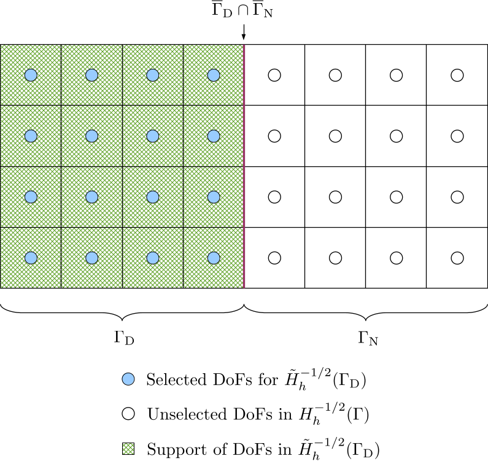
-
The finite dimensional space \(\tilde{H}_h^{1/2}(\Gamma_{\mathrm{N}})\) of the unknown Dirichlet data is a continuous function space and a function in this space vanishes outside \(\Gamma_{\mathrm{N}}\). Therefore, the DoFs in \(\overline{\Gamma}_{\mathrm{D}}\), i.e. including the interface between \(\Gamma_{\mathrm{D}}\) and \(\Gamma_{\mathrm{N}}\), should be deselected from \(H_h^{1/2}(\Gamma)\). This can be implemented by iterating over cells with material IDs not belonging to \(\Gamma_{\mathrm{N}}\) and deselecting their associated DoFs.
The DoF-to-cell topology for the selected DoFs can be built by iterating over cells in \(\Gamma_{\mathrm{N}}\).
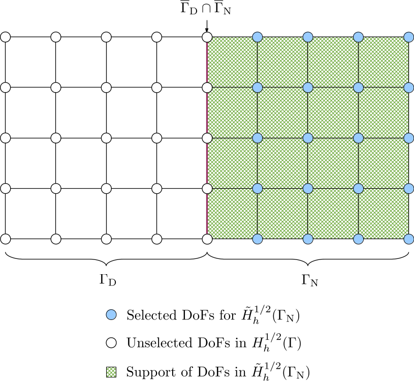
-
The extended Dirichlet boundary condition \(\tilde{g}_{\mathrm{D}}\) belongs to the space \(H^{1/2}(\Gamma)\). The extension of \(g_{\mathrm{D}}\) from \(H^{1/2}(\Gamma_{\mathrm{D}})\) to \(H^{1/2}(\Gamma)\) is not unique but should be conforming with \(H^{1/2}(\Gamma)\); in particular, the continuity of \(\tilde{g}_{\mathrm{D}}\) should be preserved. We can construct \(\tilde{g}_{\mathrm{D}}\) by extending \(g_{\mathrm{D}}\) with zeros: all DoFs in \(\Gamma_{\mathrm{D}}\) are selected from the DoF handler for the Dirichlet data, i.e. from the space \(H_h^{1/2}(\Gamma)\), and the support of these DoFs at the interface \(\overline{\Gamma}_{\mathrm{D}} \cap \overline{\Gamma}_{\mathrm{N}}\) naturally decays to zero. Consequently, the support of the selected DoFs penetrates one layer of cells into \(\Gamma_{\mathrm{N}}\). The resulting discrete space is denoted by \(\tilde{H}_h^{1/2}(\Gamma_{\mathrm{D}}^{\ast})\).
Because of support penetration, the DoF-to-cell topology for the selected DoFs should be built by iterating over all cells in the triangulation so that the one layer of cells in \(\Gamma_{\mathrm{N}}\) will be included.
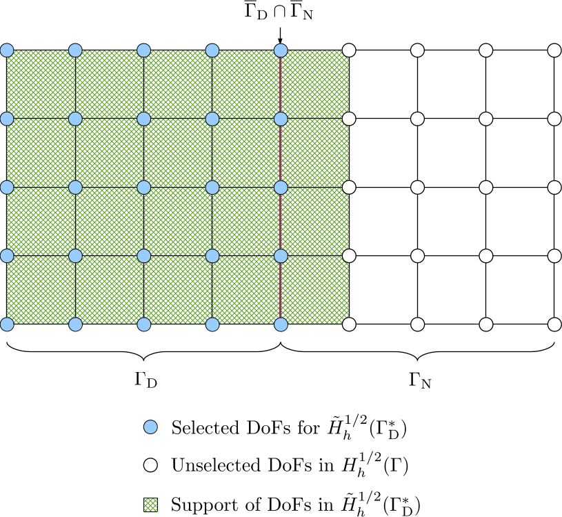
-
The extended Neumann boundary condition \(\tilde{g}_{\mathrm{N}}\) belongs to the space \(H^{-1/2}(\Gamma)\). The extension of \(g_{\mathrm{N}}\) from \(H^{-1/2}(\Gamma_{\mathrm{N}})\) to \(H^{-1/2}(\Gamma)\) is also not unique, which should be conforming with \(H^{-1/2}(\Gamma)\). Because there is no requirement on function continuity, we can simply extend of \(g_{\mathrm{N}}\) with zeros by selecting DoFs in \(\Gamma_{\mathrm{N}}\) from the DoF handler for the Neumann data, i.e. from the space \(H_h^{-1/2}(\Gamma)\). We denote this function space as \(\tilde{H}_h^{-1/2}(\Gamma_{\mathrm{N}})\).
The DoF-to-cell topology for the selected DoFs is built by iterating over cells in \(\Gamma_{\mathrm{N}}\).
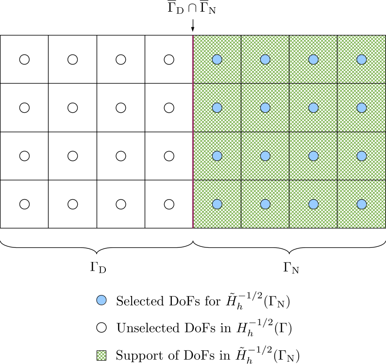
After selecting DoFs and building DoF-to-cell topologies for the above four types of spaces, \(\mathcal{H}\)-matrices can be built on corresponding subdomains for all the bilinear forms in Equation \eqref{eq:variational-form-with-subscripts}. The system of equations in matrix form is
\[\begin{equation} \begin{aligned} \begin{pmatrix} \mathcal{V}_1 & -\mathcal{K}_1 \\ \mathcal{K}_1' & \mathcal{D}_1 \end{pmatrix} \begin{pmatrix} [\tilde{t}] \\ [\tilde{u}] \end{pmatrix} = \begin{pmatrix} \sigma \mathcal{M}_1 + \mathcal{K}_2 & -\mathcal{V}_2 \\ -\mathcal{D}_2 & (1-\sigma) \mathcal{M}_2 - \mathcal{K}_2' \end{pmatrix} \begin{pmatrix} [\tilde{g}_{\mathrm{D}}] \\ [\tilde{g}_{\mathrm{N}}] \end{pmatrix}, \end{aligned} \label{eq:matrix-form} \end{equation}\]where \(\mathcal{K}_1'=\mathcal{K}_1^{\mathrm{T}}\), but \(\mathcal{K}_2' \neq \mathcal{K}_2^{\mathrm{T}}\), because they are constructed on different function spaces:
\[\begin{equation} \mathcal{K}_2: \tilde{H}_h^{-1/2}(\Gamma_{\mathrm{D}}) \times \tilde{H}_h^{1/2}(\Gamma_{\mathrm{D}}^{\ast}), \mathcal{K}_2': \tilde{H}_h^{1/2}(\Gamma_{\mathrm{N}}) \times \tilde{H}_h^{-1/2}(\Gamma_{\mathrm{N}}). \end{equation}\]N.B. When specifying the function spaces for a Galerkin matrix, we place the test space (related to matrix rows) before the trial space (related to matrix columns).
Meanwhile, \(\sigma \mathcal{M}_1\) will be directly assembled into \(\mathcal{K}_2\) and \((1-\sigma)\mathcal{M}_2\) directly built into \(-\mathcal{K}_2'\).
Explanation of example code
The example code is in the file hierbem/examples/build-hmatrix-on-subdomain/build-hmatrix-on-subdomain.cu, which enhances the two classes BEMFunctionSpace and BEMBilinearForm defined in the previous example. Then the test or trial space of an \(\mathcal{H}\)-matrix can be defined on a subdomain instead of the whole triangulation.
The new definition of the class BEMFunctionSpace is given below.
template <int dim, int spacedim>
class BEMFunctionSpace
{
public:
BEMFunctionSpace(const DoFHandler<dim, spacedim> &dof_handler_,
const unsigned int n_min);
BEMFunctionSpace(const DoFHandler<dim, spacedim> &dof_handler_,
const unsigned int n_min,
const std::set<types::material_id> &material_ids_,
const bool include_boundary_dofs_ = true,
const bool limit_support_in_subdomain_ = false);
DoFHandler<dim, spacedim> &
get_dof_handler()
{
return dof_handler;
}
const DoFHandler<dim, spacedim> &
get_dof_handler() const
{
return dof_handler;
}
std::vector<bool> &
get_dof_selectors()
{
return dof_selectors;
}
const std::vector<bool> &
get_dof_selectors() const
{
return dof_selectors;
}
ClusterTree<spacedim> &
get_cluster_tree()
{
return *cluster_tree;
}
const ClusterTree<spacedim> &
get_cluster_tree() const
{
return *cluster_tree;
}
ClusterTreeBuilder<spacedim> &
get_cluster_tree_builder()
{
return *cluster_tree_builder;
}
const ClusterTreeBuilder<spacedim> &
get_cluster_tree_builder() const
{
return *cluster_tree_builder;
}
std::vector<Point<spacedim>> &
get_support_points()
{
return cluster_tree_builder->get_support_points();
}
const std::vector<Point<spacedim>> &
get_support_points() const
{
return cluster_tree_builder->get_support_points();
}
std::vector<double> &
get_dof_average_cell_size()
{
return cluster_tree_builder->get_dof_average_cell_size();
}
const std::vector<double> &
get_dof_average_cell_size() const
{
return cluster_tree_builder->get_dof_average_cell_size();
}
std::vector<types::global_dof_index> &
get_internal_to_external_dof_numbering()
{
return cluster_tree->get_internal_to_external_dof_numbering();
}
const std::vector<types::global_dof_index> &
get_internal_to_external_dof_numbering() const
{
return cluster_tree->get_internal_to_external_dof_numbering();
}
std::vector<types::global_dof_index> &
get_external_to_internal_dof_numbering()
{
return cluster_tree->get_external_to_internal_dof_numbering();
}
const std::vector<types::global_dof_index> &
get_external_to_internal_dof_numbering() const
{
return cluster_tree->get_external_to_internal_dof_numbering();
}
DoFToCellTopology<dim, spacedim> &
get_dof_to_cell_topo()
{
return dof_to_cell_topo;
}
const DoFToCellTopology<dim, spacedim> &
get_dof_to_cell_topo() const
{
return dof_to_cell_topo;
}
std::vector<types::global_dof_index> &
get_local_to_full_dof_id_map()
{
return local_to_full_dof_id_map;
}
const std::vector<types::global_dof_index> &
get_local_to_full_dof_id_map() const
{
return local_to_full_dof_id_map;
}
private:
void
generate_dof_selectors();
void
collect_cell_iterators();
void
generate_maps_between_full_and_local_dof_ids();
void
build_dof_to_cell_topology();
const DoFHandler<dim, spacedim> &dof_handler;
bool is_full_domain;
bool include_boundary_dofs;
bool limit_support_in_subdomain;
std::set<types::material_id> material_ids;
std::vector<bool> dof_selectors;
types::global_dof_index n_dofs;
std::vector<typename DoFHandler<dim, spacedim>::cell_iterator> cell_iterators;
std::vector<types::global_dof_index> full_to_local_dof_id_map;
std::vector<types::global_dof_index> local_to_full_dof_id_map;
DoFToCellTopology<dim, spacedim> dof_to_cell_topo;
std::unique_ptr<ClusterTree<spacedim>> cluster_tree;
std::unique_ptr<ClusterTreeBuilder<spacedim>> cluster_tree_builder;
};
The following member variables are added to the class BEMFunctionSpace:
is_full_domainindicates if the function space is constructed on the whole domain or on a subdomain.include_boundary_dofsindicates whether selecting those DoFs at the interface between the current material subdomain and the other subdomains. An example of boundary DoFs is the DoFs at the interface between the Dirichlet boundary and the Neumann boundary, i.e. \(\overline{\Gamma}_{\mathrm{D}} \cap \overline{\Gamma}_{\mathrm{N}}\).limit_support_in_subdomainspecifies whether limiting the support of DoFs at the interface within the current subdomain. As described above in this example, for a Laplace problem with mixed boundary conditions, we will not limit DoF support, therefore this flag is alwaysfalse.material_idsis a set of material indices which belong to the subdomain.dof_selectorsis a vector of DoF selection flags, whose size is equal to the total number of DoFs in the DoF handler related to this function space.n_dofsis the number of selected DoFs.full_to_local_dof_id_mapuses astd::vectorto represent a map from full DoF indices (the natural indices starting from 0 for all DoFs in the DoF handler) to local DoF indices (the natural indices starting from 0 for selected DoFs). An index for accessing this vector is a full DoF index, while the vector element is the corresponding local DoF index.local_to_full_dof_id_mapuses astd::vectorto represent a map from local DoF indices to full DoF indices. Its size is the number of selected DoFs.
A new constructor is added to BEMFunctionSpace, which is responsible for constructing a function on a subdomain defined by a set of material indices.
template <int dim, int spacedim>
BEMFunctionSpace<dim, spacedim>::BEMFunctionSpace(
const DoFHandler<dim, spacedim> &dof_handler_,
const unsigned int n_min,
const std::set<types::material_id> &material_ids_,
const bool include_boundary_dofs_,
const bool limit_support_in_subdomain_)
: dof_handler(dof_handler_)
, is_full_domain(false)
, include_boundary_dofs(include_boundary_dofs_)
, limit_support_in_subdomain(limit_support_in_subdomain_)
, material_ids(material_ids_)
{
generate_dof_selectors();
generate_maps_between_full_and_local_dof_ids();
cluster_tree_builder =
std::make_unique<ClusterTreeBuilder<spacedim>>(dof_handler,
local_to_full_dof_id_map,
n_min);
cluster_tree = cluster_tree_builder->build();
build_dof_to_cell_topology();
}
The member function build_dof_to_cell_topology calls one of the overloaded versions of DoFToolsExt::build_dof_to_cell_topology depending on whether the function space is defined on the whole domain or a subdomain.
template <int dim, int spacedim>
void
BEMFunctionSpace<dim, spacedim>::build_dof_to_cell_topology()
{
collect_cell_iterators();
if (is_full_domain)
DoFToolsExt::build_dof_to_cell_topology(dof_to_cell_topo,
cell_iterators,
dof_handler);
else
DoFToolsExt::build_dof_to_cell_topology(dof_to_cell_topo,
cell_iterators,
dof_handler,
dof_selectors);
}
In the two member functions build_hmatrix and build_hmatrix_with_mass_matrix in the class BEMBilinearForm, local to full DoF index maps for both test and trial spaces should be passed as pointers to the working function fill_hmatrix_with_aca_plus_smp. When a BEM function space is defined on the whole domain, a null pointer should be passed. When a BEM function space is defined on a subdomain, the actual pointer of the map should be passed. This can be seen in the implementation of build_hmatrix as below.
template <int dim,
int spacedim,
template <int, typename> typename KernelFunctionType,
typename RangeNumberType,
typename KernelNumberType>
std::unique_ptr<HMatrix<spacedim, RangeNumberType>>
BEMBilinearForm<dim,
spacedim,
KernelFunctionType,
RangeNumberType,
KernelNumberType>::
build_hmatrix(const unsigned int thread_num,
const unsigned int max_rank,
const double epsilon,
const DeviceNumberType<KernelNumberType> kernel_factor,
const SauterQuadratureRule<dim> &sauter_quad_rule,
const std::vector<MappingInfo<dim, spacedim> *> &mappings,
const std::map<types::material_id, unsigned int>
&material_id_to_mapping_index,
SubdomainTopology<dim, spacedim> &subdomain_topology)
{
HMatrixSupport::Property property = is_symmetric ?
HMatrixSupport::Property::symmetric :
HMatrixSupport::Property::general;
HMatrixSupport::BlockType block_type =
HMatrixSupport::BlockType::diagonal_block;
auto hmat = std::make_unique<HMatrix<spacedim, RangeNumberType>>(
*block_cluster_tree, max_rank, property, block_type);
fill_hmatrix_with_aca_plus_smp<dim,
spacedim,
KernelFunctionType,
RangeNumberType,
KernelNumberType,
SurfaceNormalDetector<dim, spacedim>>(
thread_num,
*hmat,
ACAConfig(max_rank, epsilon, block_cluster_tree->get_eta()),
kernel,
kernel_factor,
test_space.get_dof_to_cell_topo(),
trial_space.get_dof_to_cell_topo(),
sauter_quad_rule,
test_space.get_dof_handler(),
trial_space.get_dof_handler(),
test_space.get_is_full_domain() ?
nullptr :
&test_space.get_local_to_full_dof_id_map(),
trial_space.get_is_full_domain() ?
nullptr :
&trial_space.get_local_to_full_dof_id_map(),
test_space.get_internal_to_external_dof_numbering(),
trial_space.get_internal_to_external_dof_numbering(),
mappings,
material_id_to_mapping_index,
SurfaceNormalDetector<dim, spacedim>(subdomain_topology),
is_symmetric);
return hmat;
}
In the main function, we now read a triangulation of a bar model, which has 6 surfaces.
Triangulation<dim, spacedim> tria;
std::ifstream mesh_in(HBEM_TEST_MODEL_DIR "bar.msh");
read_msh(mesh_in, tria);
SubdomainTopology<dim, spacedim> subdomain_topology;
subdomain_topology.generate_topology(HBEM_TEST_MODEL_DIR "bar.brep",
HBEM_TEST_MODEL_DIR "bar.msh");
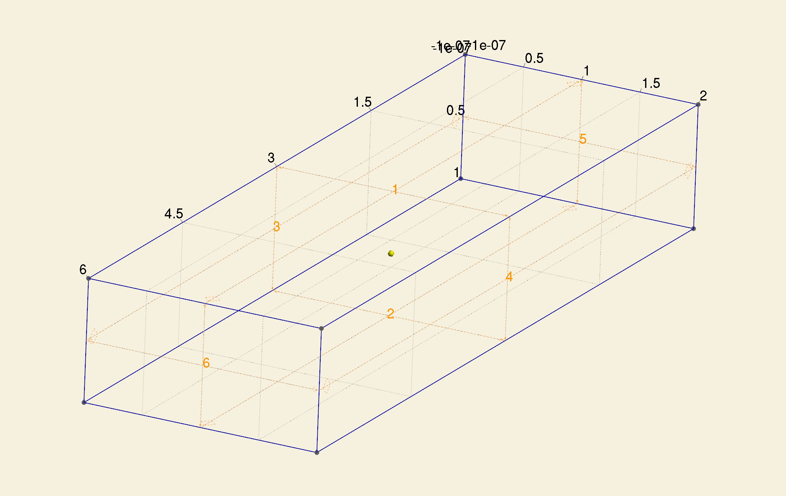
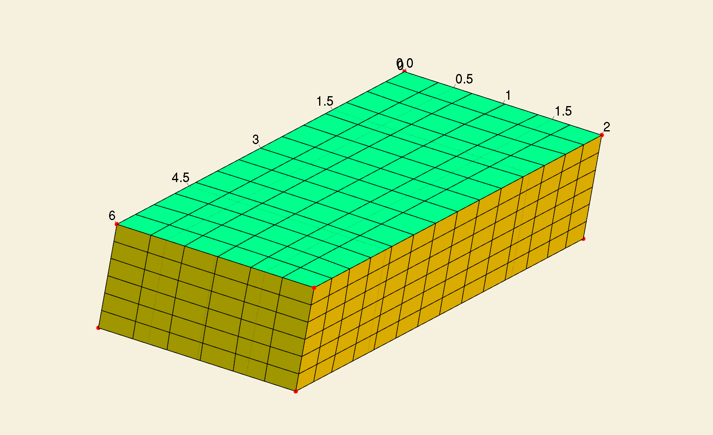
Among the 6 surfaces, [1, 2, 3, 4] comprise \(\Gamma_{\mathrm{N}}\), while [5, 6] comprise \(\Gamma_{\mathrm{D}}\).
Because all surfaces are flat, we assign a flat manifold to them and use the first order mapping for this manifold.
std::map<types::manifold_id, Manifold<dim, spacedim> *> manifolds;
Manifold<dim, spacedim> *flat_manifold = new FlatManifold<dim, spacedim>();
manifolds[0] = flat_manifold;
std::map<EntityTag, types::manifold_id> manifold_description;
for (types::material_id i = 1; i <= 6; i++)
manifold_description[i] = 0;
for (auto &cell : tria.active_cell_iterators())
cell->set_all_manifold_ids(manifold_description[cell->material_id()]);
for (const auto &m : manifolds)
tria.set_manifold(m.first, *m.second);
std::vector<MappingInfo<dim, spacedim> *> mappings(1);
mappings[0] = new MappingInfo<dim, spacedim>(1);
std::map<types::material_id, unsigned int> material_id_to_mapping_index;
for (types::material_id i = 1; i <= 6; i++)
material_id_to_mapping_index[i] = 0;
Next, we create two finite elements FE_Q(1) and FE_DGQ(0), two corresponding DoF handlers and four function spaces, namely, \(\tilde{H}_h^{1/2}(\Gamma_{\mathrm{D}}^{\ast})\), \(\tilde{H}_h^{1/2}(\Gamma_{\mathrm{N}})\), \(\tilde{H}_h^{-1/2}(\Gamma_{\mathrm{D}})\) and \(\tilde{H}_h^{-1/2}(\Gamma_{\mathrm{N}})\).
FE_Q<dim, spacedim> fe_H_half(1);
DoFHandler<dim, spacedim> dof_handler_H_half(tria);
dof_handler_H_half.distribute_dofs(fe_H_half);
BEMFunctionSpace<dim, spacedim>
H_half_Gamma_D(dof_handler_H_half, n_min_H_half, {5, 6}, true, false);
BEMFunctionSpace<dim, spacedim>
H_half_Gamma_N(dof_handler_H_half, n_min_H_half, {1, 2, 3, 4}, false, false);
FE_DGQ<dim, spacedim> fe_H_minus_half(0);
DoFHandler<dim, spacedim> dof_handler_H_minus_half(tria);
dof_handler_H_minus_half.distribute_dofs(fe_H_minus_half);
BEMFunctionSpace<dim, spacedim> H_minus_half_Gamma_D(dof_handler_H_minus_half,
n_min_H_minus_half,
{5, 6},
true,
false);
BEMFunctionSpace<dim, spacedim> H_minus_half_Gamma_N(dof_handler_H_minus_half,
n_min_H_minus_half,
{1, 2, 3, 4},
true,
false);
Then the bilinear forms \(b_{V_1}\), \(b_{K_1}\), \(b_{V_2}\) and \(b_{\sigma I_1 + K_2}\) as well as their discretized \(\mathcal{H}\)-matrices can be constructed.
BEMBilinearForm<dim, spacedim, SingleLayerKernel> bV1(H_minus_half_Gamma_D,
H_minus_half_Gamma_D);
bV1.build_block_cluster_tree(eta, n_min_block_cluster_tree);
BEMBilinearForm<dim, spacedim, DoubleLayerKernel> bK1(H_half_Gamma_N,
H_minus_half_Gamma_D);
bK1.build_block_cluster_tree(eta, n_min_block_cluster_tree);
BEMBilinearForm<dim, spacedim, SingleLayerKernel> bV2(H_minus_half_Gamma_N,
H_minus_half_Gamma_D);
bV2.build_block_cluster_tree(eta, n_min_block_cluster_tree);
BEMBilinearForm<dim, spacedim, DoubleLayerKernel> bI1K2(H_half_Gamma_D,
H_minus_half_Gamma_D);
bI1K2.build_block_cluster_tree(eta, n_min_block_cluster_tree);
const unsigned int thread_num = 4;
const unsigned int max_rank = 5;
const double epsilon = 0.01;
std::unique_ptr<HMatrix<spacedim, double>> V1 =
bV1.build_hmatrix(thread_num,
max_rank,
epsilon,
1.0,
SauterQuadratureRule<dim>(5, 4, 4, 3),
mappings,
material_id_to_mapping_index,
subdomain_topology);
std::unique_ptr<HMatrix<spacedim, double>> K1 =
bK1.build_hmatrix(thread_num,
max_rank,
epsilon,
1.0,
SauterQuadratureRule<dim>(5, 4, 4, 3),
mappings,
material_id_to_mapping_index,
subdomain_topology);
std::unique_ptr<HMatrix<spacedim, double>> V2 =
bV2.build_hmatrix(thread_num,
max_rank,
epsilon,
1.0,
SauterQuadratureRule<dim>(5, 4, 4, 3),
mappings,
material_id_to_mapping_index,
subdomain_topology);
std::unique_ptr<HMatrix<spacedim, double>> I1K2 =
bI1K2.build_hmatrix_with_mass_matrix(thread_num,
max_rank,
epsilon,
1.0,
0.5,
SauterQuadratureRule<dim>(5, 4, 4, 3),
QGauss<dim>(2),
mappings,
material_id_to_mapping_index,
subdomain_topology);
We have also defined a function visualize_dofs_in_function_space, which is used to generate VTK files for visualization of the selected support points and their support set of a function space.
template <int dim, int spacedim>
void
visualize_dofs_in_function_space(const std::string &file_basename,
const BEMFunctionSpace<dim, spacedim> &space)
{
const types::global_dof_index n_dofs = space.get_dof_handler().n_dofs();
const std::vector<bool> &dof_selectors = space.get_dof_selectors();
Vector<double> dof_markers(n_dofs);
for (types::global_dof_index i = 0; i < n_dofs; i++)
if (dof_selectors[i])
dof_markers(i) = 1.0;
else
dof_markers(i) = 0;
std::ofstream vtk_output(file_basename + ".vtk");
DataOut<dim, spacedim> data_out;
data_out.add_data_vector(space.get_dof_handler(), dof_markers, "dof_support");
data_out.build_patches();
data_out.write_vtk(vtk_output);
std::ofstream point_output(file_basename + ".txt");
const std::vector<Point<spacedim>> &support_points =
space.get_support_points();
for (types::global_dof_index i = 0; i < support_points.size(); i++)
point_output << support_points[i] << "\n";
point_output.close();
}
In this function, a vector dof_markers is defined, which has a same size as the total number of DoFs in the DoF handler. When a DoF is selected, the corresponding entry in dof_markers is set to 1.0, otherwise 0. Then this vector is added to a DataOut object for visualization in Paraview. Next, the coordinates of all selected support points are printed into a text file, which can be loaded into Paraview.
The selected support points and support set for the four defined BEM function spaces are given below.
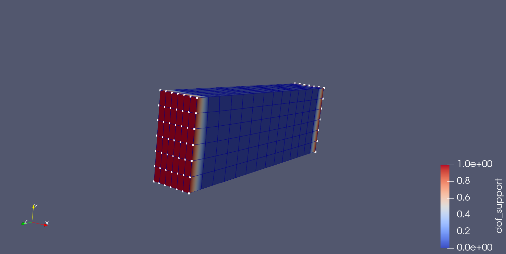
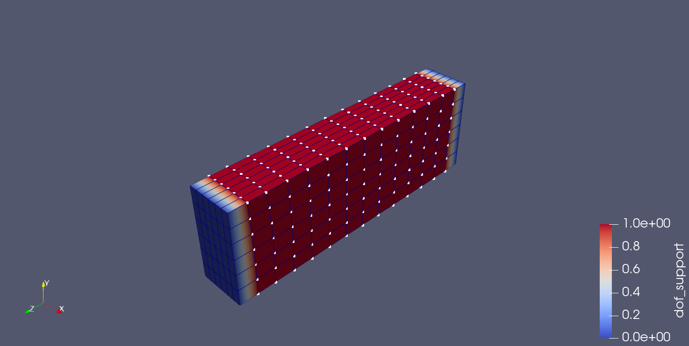
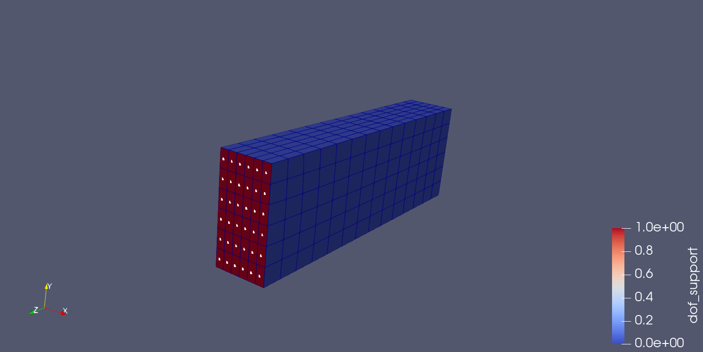
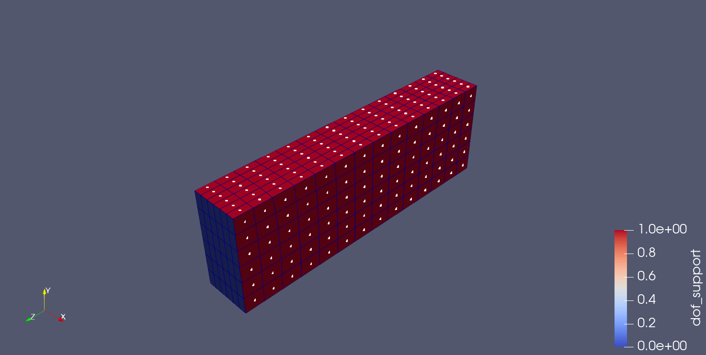
Finally, we visualize the leaf set block structures of all \(\mathcal{H}\)-matrices as before.
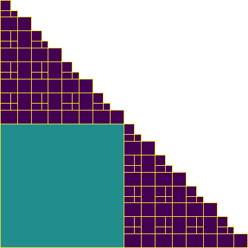
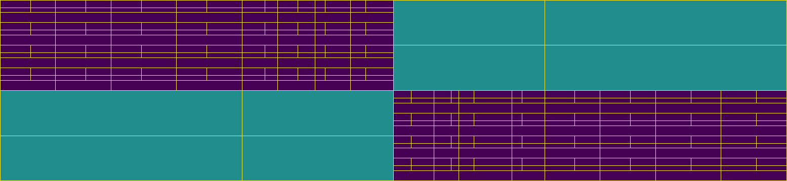
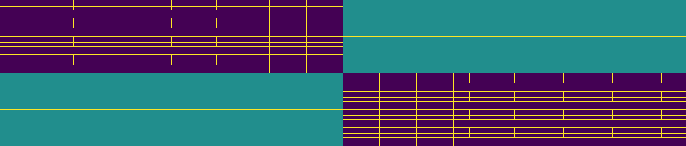
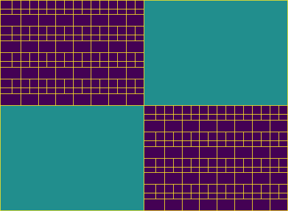